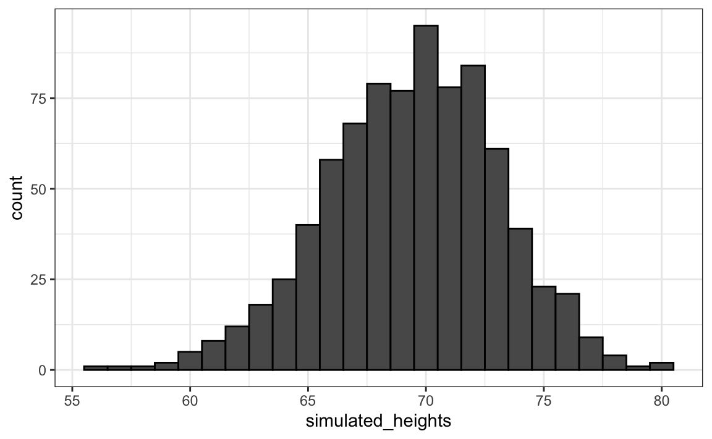

Capítulo 13 Probabilidade
Nos jogos de azar, a probabilidade tem uma definição muito intuitiva. Por exemplo, sabemos o que significa quando dizemos que a probabilidade de um par de dados rolar sete é 1 em 6. No entanto, esse não é o caso em outros contextos. Hoje, a teoria das probabilidades é usada de maneira muito mais ampla com a palavra “probabilidade” e parte da linguagem cotidiana. Se digitarmos “Quais são as probabilidades de” no Google, a função de preenchimento automático nos fornecerá: “ter gêmeos”, “ter gêmeos” e “ganhar na loteria”. Um dos objetivos desta parte do livro é ajudá-lo a entender como a probabilidade é útil para entender e descrever eventos do mundo real quando realizamos análises de dados.
Desde que saber calcular as probabilidades oferece uma vantagem no jogo, muitas pessoas inteligentes ao longo da história, incluindo matemáticos famosos como Cardano, Fermat e Pascal, gastaram tempo e energia pensando na matemática desses jogos. . Como resultado, nasceu a teoria das probabilidades. A probabilidade ainda é muito útil nos jogos de azar modernos. Por exemplo, no pôquer, podemos calcular a probabilidade de ganhar uma mão com base nas cartas da mesa. Além disso, os cassinos confiam na teoria das probabilidades para desenvolver jogos que quase sempre garantem ganhos.
A teoria da probabilidade é útil em muitos outros contextos e, em particular, em áreas que de alguma forma dependem dos dados afetados pelo acaso. Todos os outros capítulos desta parte são baseados na teoria das probabilidades. Portanto, o conhecimento da probabilidade é indispensável para a ciência de dados.
13.1 Probabilidade discreta
Começamos explorando alguns princípios básicos relacionados aos dados categóricos. Essa parte da probabilidade é conhecida como a probabilidade discreta. Isso nos ajudará a entender a teoria das probabilidades que apresentaremos posteriormente para dados numéricos e contínuos, muito mais comuns em aplicativos de ciência de dados. Probabilidade discreta é mais útil em jogos de cartas e, portanto, nós as usamos como exemplos.
13.1.1 Frequência relativa
Embora a palavra probabilidade seja usada na linguagem cotidiana, é difícil responder a perguntas sobre probabilidade, se não impossível, porque o conceito de “probabilidade” não está bem definido. Aqui discutimos uma definição matemática de probability que nos permite dar respostas precisas a certas perguntas.
Por exemplo, se eu tiver 2 bolinhas vermelhas e 3 bolinhas azuis dentro de uma urna46 (muitos livros de probabilidade usam esse termo arcaico, também o fazemos) e escolha um aleatoriamente, qual é a probabilidade de escolher um vermelho? Nossa intuição nos diz que a resposta é 2/5 ou 40%. Uma definição precisa pode ser dada observando que existem cinco resultados possíveis, dos quais dois atendem à condição necessária para o evento “escolha um mármore vermelho”. Dado que cada um dos cinco resultados tem a mesma probabilidade de ocorrência, concluímos que a probabilidade é de 0,4 para vermelho e 0,6 para azul.
Uma maneira mais tangível de pensar sobre a probabilidade de um evento é a proporção de vezes que o evento ocorre quando repetimos o experimento um número infinito de vezes, independentemente e sob as mesmas condições.
13.1.2 Notação
Usamos a notação \(\mbox{Pr}(A)\) para denotar a probabilidade de evento acontecer \(A\). Usamos o termo geral event para nos referirmos a coisas que podem acontecer quando algo acontece por acaso. No exemplo anterior, o evento foi “escolha um mármore vermelho”. Em uma pesquisa política na qual chamamos aleatoriamente 100 prováveis eleitores americanos, um exemplo de evento é “ligar para 48 democratas e 52 republicanos”.
Em aplicativos de ciência de dados, frequentemente trabalharemos com variáveis contínuas. Esses eventos costumam ser coisas como “essa pessoa tem mais de um metro e oitenta”? Nesse caso, escrevemos eventos de uma forma mais matemática: \(X \geq 6\). Veremos mais desses exemplos abaixo. Aqui nos concentramos em dados categóricos.
13.1.3 Distribuições de probabilidade
Se conhecermos a frequência relativa das diferentes categorias, definir uma distribuição para resultados categóricos é relativamente simples. Simplesmente atribuímos uma probabilidade a cada categoria. Nos casos que podem ser considerados bolinhas de gude em uma urna, para cada tipo de mármore, sua proporção define a distribuição.
Se estivermos chamando aleatoriamente prováveis eleitores de uma população que é 44% democrata, 44% republicana, 10% indecisa e 2% Partido Verde, essas proporções definem a probabilidade de cada grupo. A distribuição de probabilidade é:
| Pr (escolha um republicano) | = | 0,44 |
| Pr (escolha um democrata) | = | 0,44 |
| Pr (escolha indecisa) | = | 0,10 |
| Pr (escolha um verde) | = | 0,02 |
Simulações de Monte Carlo para dados categóricos
Os computadores oferecem uma maneira de realizar o experimento aleatório simples descrito acima: escolhendo um mármore aleatoriamente a partir de uma urna que contém três bolinhas azuis e duas vermelhas. Geradores de números aleatórios nos permitem imitar o processo de escolha aleatória.
Um exemplo é a função sample em R. Demonstramos seu uso no código abaixo. Primeiro, usamos a função rep para gerar a urna:
e depois usamos sample escolher um mármore aleatoriamente:
Essa linha de código produz um resultado aleatório. Queremos repetir esse experimento um número infinito de vezes, mas é impossível repeti-lo para sempre. No entanto, podemos repetir o experimento um número suficientemente grande de vezes para que os resultados sejam praticamente equivalentes a repeti-lo para sempre. Este é um exemplo de simulação de Monte Carlo.
Muito do que estudam estatísticos matemáticos e teóricos, que não discutimos neste livro, refere-se a fornecer definições rigorosas de “virtualmente equivalente”, além de estudar o quão perto um grande número de experimentos nos leva ao que acontece no limite. . Mais adiante nesta seção, oferecemos uma abordagem prática para determinar o que é “grande o suficiente”.
Para realizar nossa primeira simulação de Monte Carlo, usamos a função replicate, o que nos permite repetir a mesma tarefa várias vezes. Aqui, repetimos o evento aleatório \(B =\) 10.000 vezes:
Agora podemos ver se nossa definição realmente concorda com essa abordagem de simulação de Monte Carlo. Podemos usar table para ver a distribuição:
e prop.table nos dá as proporções:
Os números acima são probabilidades estimadas fornecidas por uma simulação de Monte Carlo. A teoria estatística, que não discutimos aqui, nos diz que onde \(B\) à medida que aumenta, as estimativas se aproximam de 3/5 = 0,6 e 2/5 = 0,4.
Embora este seja um exemplo simples e pouco útil, usaremos simulações de Monte Carlo para estimar probabilidades nos casos em que é difícil calcular quantidades exatas. Antes de nos aprofundarmos em exemplos mais complexos, usaremos alguns simples para demonstrar as ferramentas de computação disponíveis em R.
13.1.4 Defina a semente aleatória
Antes de continuar, explicaremos brevemente a seguinte linha de código importante:
Ao longo deste livro, usamos geradores de números aleatórios. Isso implica que muitos dos resultados que apresentamos podem mudar por acaso e uma versão congelada do livro pode mostrar um resultado diferente do que eles obtêm quando tentam codificar como observam no livro. Isso não é um problema, pois os resultados são aleatórios e podem mudar. No entanto, se você quiser garantir que os resultados sejam exatamente os mesmos sempre que executá-los, poderá definir a semente de geração de número aleatório R (seed) para um número específico. Definimos isso em 1986. Queremos evitar o uso da mesma semente todas as vezes. Uma maneira popular de escolher a semente é subtraindo o mês e o dia do ano. Por exemplo, para 20 de dezembro de 2018, lançamos a semente em 1986: \(2018 - 12 - 20 = 1986\).
Você pode obter mais informações sobre como corrigir a semente consultando a documentação:
Nos exercícios, podemos pedir que você conserte a semente para garantir que seus resultados sejam exatamente o que esperamos.
13.1.5 Com e sem substituição
A função sample ele tem um argumento que nos permite escolher mais de um item da urna. No entanto, por padrão, essa seleção ocorre sem substituição: após a seleção de uma bola de gude, ela não é colocada de volta na urna. Observe o que acontece quando pedimos para selecionar cinco bolas de gude aleatoriamente:
sample(beads, 5)
#> [1] "red" "blue" "blue" "blue" "red"
sample(beads, 5)
#> [1] "red" "red" "blue" "blue" "blue"
sample(beads, 5)
#> [1] "blue" "red" "blue" "red" "blue"Isso resulta em rearranjos que sempre têm três bolinhas azuis e duas vermelhas. Se pedirmos seis bolas de gude para serem selecionadas, obteremos um erro:
Error in sample.int(length(x), size, replace, prob) : cannot take a sample larger than the population when 'replace = FALSE'
No entanto, a função sample pode ser usado diretamente, sem o uso de replicate, para repetir o mesmo experimento, escolhendo 1 dos 5 mármores, continuamente, nas mesmas condições. Para fazer isso, amostramos com substituição: o mármore é devolvido à urna após a seleção.
Nós podemos dizer sample eu fazer isso mudando o argumento replace que por padrão é FALSE, para replace = TRUE:
events <- sample(beads, B, replace = TRUE)
prop.table(table(events))
#> events
#> blue red
#> 0.602 0.398Não surpreende que obtenham resultados muito semelhantes aos obtidos anteriormente com replicate.
13.2 Independência
Dizemos que dois eventos são independentes se o resultado de um não afeta o outro. O exemplo clássico é o lançamento de moedas. Toda vez que jogamos uma moeda, a probabilidade de ver caras é 1/2, independentemente dos resultados dos lançamentos anteriores. O mesmo acontece quando coletamos bolas de gude de uma urna de substituição. No exemplo acima, a probabilidade de vermelho é 0,40, independentemente das seleções anteriores.
Muitos exemplos de eventos não independentes vêm de jogos de cartas. Quando negociamos a primeira carta, a probabilidade de obter um K é 1/13, pois há treze possibilidades: Duas, Três, \(\dots\), Ten, J, Q, K e As. Mas se dermos um K como primeira carta e não a substituirmos no baralho, a probabilidade de uma segunda carta ser K é menor, porque só restam três Ks: a probabilidade é 3 de 51. Portanto, esses eventos não são independentes: o primeiro resultado afeta o seguinte.
Para ver um caso extremo de eventos não independentes, considere nosso exemplo de escolha de cinco bolinhas aleatoriamente sem substituição:
Se eles tiverem que adivinhar a cor do primeiro mármore, irão prever o azul, pois o azul tem 60% de chance. Mas se mostrarmos o resultado dos últimos quatro resultados:
você ainda adivinharia o azul? Claro que não. Agora você sabe que a probabilidade de vermelho é 1, pois o único mármore restante é vermelho. Os eventos não são independentes, portanto as probabilidades mudam.
13.3 Probabilidades condicionais
Quando os eventos não são independentes, as probabilidades condicionais são úteis. Já vimos um exemplo de probabilidade condicional: calculamos a probabilidade de que uma segunda carta seja K desde que a primeira carta fosse K. Em probabilidade, usamos a seguinte notação:
\[ \mbox{Pr}(\mbox{Card 2 is a king} \mid \mbox{Card 1 is a king}) = 3/51 \]
Nós usamos o \(\mid\) como uma abreviação de “dado isso” ou “condicional”.
Quando dois eventos, digamos \(A\) e \(B\), eles são independentes, temos:
\[ \mbox{Pr}(A \mid B) = \mbox{Pr}(A) \]
Esta é a maneira matemática de dizer: o fato de que \(B\) aconteceu não afeta a probabilidade de \(A\) acontecer. De fato, isso pode ser considerado a definição matemática de independência.
13.4 Regras de adição e multiplicação
Regra de multiplicação
Se queremos saber a probabilidade de dois eventos ocorrerem, digamos \(A\) e \(B\), podemos usar a regra de multiplicação:
\[ \mbox{Pr}(A \mbox{ and } B) = \mbox{Pr}(A)\mbox{Pr}(B \mid A) \] Vamos usar o jogo de cartas do Blackjack como exemplo. No Blackjack, eles recebem duas cartas aleatoriamente. Depois de ver o que têm, podem pedir mais cartões. O objetivo é chegar mais perto dos 21 do que o revendedor, sem passar. Os face cards valem 10 pontos e os ases valem 11 ou 1 (um escolhe).
Portanto, no Blackjack, para calcular as probabilidades de conseguir um 21 recebendo um ás e depois uma carta de face, calculamos a probabilidade de a primeira carta ser um ás e multiplicamos pela probabilidade de tirar uma carta de cara ou 10, dado que o primeiro foi um ás: \(1/13 \times 16/51 \approx 0.025\).
A regra de multiplicação também se aplica a mais de dois eventos. Podemos usar a indução para incluir mais eventos:
\[ \mbox{Pr}(A \mbox{ and } B \mbox{ and } C) = \mbox{Pr}(A)\mbox{Pr}(B \mid A)\mbox{Pr}(C \mid A \mbox{ and } B) \]
Regra de multiplicação sob independência
Quando temos eventos independentes, a regra de multiplicação se torna mais simples:
\[ \mbox{Pr}(A \mbox{ and } B \mbox{ and } C) = \mbox{Pr}(A)\mbox{Pr}(B)\mbox{Pr}(C) \]
Mas devemos ter muito cuidado antes de usar isso, pois assumir a independência quando ela realmente não existe pode resultar em cálculos de probabilidade muito diferentes e incorretos.
Como exemplo, imagine um caso em que o suspeito seja descrito como tendo bigode e barba. O réu tem bigode e barba e a acusação traz um “especialista” que testemunha que 1/10 dos homens têm barba e 1/5 têm bigode, portanto, usando a regra da multiplicação, concluímos que apenas \(1/10 \times 1/5\) ou 0,02 tem ambos.
Mas para se multiplicar assim, precisamos assumir a independência! Digamos que a probabilidade condicional de um homem ter um bigode condicionado no qual ele tem barba é 0,95. Portanto, o cálculo correto da probabilidade resulta em um número muito maior: \(1/10 \times 95/100 = 0.095\).
A regra de multiplicação também nos fornece uma fórmula geral para calcular probabilidades condicionais:
\[ \mbox{Pr}(B \mid A) = \frac{\mbox{Pr}(A \mbox{ and } B)}{ \mbox{Pr}(A)} \]
Para ilustrar como usamos essas fórmulas e conceitos na prática, usaremos vários exemplos relacionados a jogos de cartas.
Regra de adição
A regra de adição nos diz que:
\[ \mbox{Pr}(A \mbox{ or } B) = \mbox{Pr}(A) + \mbox{Pr}(B) - \mbox{Pr}(A \mbox{ and } B) \]
Essa regra é intuitiva: pense em um diagrama de Venn. Se simplesmente adicionarmos as probabilidades, contaremos a interseção duas vezes, portanto, devemos subtrair uma instância.

13.5 Combinações e permutações
Em nosso primeiro exemplo, imaginamos uma urna com cinco bolinhas de gude. Lembre-se de que, para calcular a distribuição de probabilidade de um empate, simplesmente listamos todas as probabilidades. Havia cinco e, portanto, para cada evento, contamos quantas dessas probabilidades estavam associadas ao evento. A probabilidade de escolher um mármore azul é de 3/5, devido aos cinco resultados possíveis, três eram azuis.
Para casos mais complicados, os cálculos não são tão simples. Por exemplo, qual é a probabilidade de que, se eu escolher cinco cartas sem substituição, receberei todas as cartas do mesmo naipe (suit em inglês), conhecidas como “flush” no poker? Em um curso de probabilidade discreta, você aprende a teoria de como fazer esses cálculos. Aqui, focamos em como usar o código R para calcular as respostas.
Primeiro, vamos construir um baralho de cartas. Para isso, usaremos as funções expand.grid e paste. Nós usamos paste para criar cadeias juntando cadeias menores. Para fazer isso, pegamos o número e o naipe de um cartão e criamos o nome do cartão assim:
paste também funciona em pares de vetores que executam a operação elemento a elemento:
A função expand.grid nos fornece todas as combinações de duas entradas de vetor. Por exemplo, se eles têm calças azuis e pretas e camisas brancas, cinza e xadrez (plaid), todas as suas combinações são:
expand.grid(pants = c("blue", "black"), shirt = c("white", "grey", "plaid"))
#> pants shirt
#> 1 blue white
#> 2 black white
#> 3 blue grey
#> 4 black grey
#> 5 blue plaid
#> 6 black plaidAqui está como geramos um baralho de cartas:
suits <- c("Diamonds", "Clubs", "Hearts", "Spades")
numbers <- c("Ace", "Deuce", "Three", "Four", "Five", "Six", "Seven",
"Eight", "Nine", "Ten", "Jack", "Queen", "King")
deck <- expand.grid(number=numbers, suit=suits)
deck <- paste(deck$number, deck$suit)Com o baralho construído, podemos verificar se a probabilidade de um K ser a primeira carta é 1/13 calculando a proporção de possíveis resultados que satisfazem nossa condição:
Agora, que tal a probabilidade condicional de que a segunda carta seja um K desde que a primeira carta fosse um K? Anteriormente, deduzimos que, se um K já estiver fora do baralho e restarem 51 cartas, a probabilidade será de 3/51. Vamos confirmar listando todos os resultados possíveis.
Para fazer isso, podemos usar a função permutations do pacote gtools. Para qualquer lista de tamanho n, essa função calcula todas as diferentes combinações que podemos obter quando selecionamos r artigos. Aqui estão todas as maneiras pelas quais podemos escolher dois números de uma lista que consiste em 1,2,3:
library(gtools)
permutations(3, 2)
#> [,1] [,2]
#> [1,] 1 2
#> [2,] 1 3
#> [3,] 2 1
#> [4,] 2 3
#> [5,] 3 1
#> [6,] 3 2Observe que a ordem é importante aqui: 3.1 é diferente de 1.3. Além disso, observe que (1,1), (2,2) e (3,3) não aparecem porque, quando escolhemos um número, ele não pode aparecer novamente.
Opcionalmente, podemos adicionar um vetor. Se desejar ver cinco números de telefone aleatórios (sete dígitos) de todos os números de telefone possíveis (sem repetição), você pode escrever:
all_phone_numbers <- permutations(10, 7, v = 0:9)
n <- nrow(all_phone_numbers)
index <- sample(n, 5)
all_phone_numbers[index,]
#> [,1] [,2] [,3] [,4] [,5] [,6] [,7]
#> [1,] 1 3 8 0 6 7 5
#> [2,] 2 9 1 6 4 8 0
#> [3,] 5 1 6 0 9 8 2
#> [4,] 7 4 6 0 2 8 1
#> [5,] 4 6 5 9 2 8 0Em vez de usar os números de 1 a 10, o padrão, R usa o que fornecemos através v: os dígitos de 0 a 9.
Para calcular todas as maneiras possíveis, podemos escolher duas cartas quando a ordem importa, escrevemos:
Esta é uma matriz com duas colunas e 2652 linhas. Com uma matriz, podemos obter a primeira e a segunda letras assim:
Agora, os casos para os quais a primeira letra é um K podem ser calculados assim:
Para obter a probabilidade condicional, calculamos qual fração deles tem um K como a segunda letra:
que é exatamente 3/51, como já deduzimos. Observe que o código acima é equivalente a:
o que você usa mean ao invés de sum e é uma versão R de:
\[ \frac{\mbox{Pr}(A \mbox{ and } B)}{ \mbox{Pr}(A)} \]
E se a ordem não importar? Por exemplo, no Blackjack, se você receber um Ás e uma carta de face como primeira mão, ela será chamada Natural 21 e você ganhará automaticamente. Se quiséssemos calcular a probabilidade de isso acontecer, listaríamos as combinações, não as permutações, pois a ordem não importa.
Na segunda linha, o resultado não inclui (2.1) porque (1.2) já foi listado. O mesmo se aplica a (3.1) e (3.2).
Portanto, para calcular a probabilidade de um Natural 21, podemos fazer o seguinte:
aces <- paste("Ace", suits)
facecard <- c("King", "Queen", "Jack", "Ten")
facecard <- expand.grid(number = facecard, suit = suits)
facecard <- paste(facecard$number, facecard$suit)
hands <- combinations(52, 2, v = deck)
mean(hands[,1] %in% aces & hands[,2] %in% facecard)
#> [1] 0.0483Na última linha, assumimos que o ás é a primeira carta que recebemos. Sabemos disso porque, sabendo como combination listar as probabilidades, entendemos que você listará esse caso primeiro. Mas, com certeza, poderíamos ter produzido a mesma resposta escrevendo o seguinte:
mean((hands[,1] %in% aces & hands[,2] %in% facecard) |
(hands[,2] %in% aces & hands[,1] %in% facecard))
#> [1] 0.0483Exemplo de Monte Carlo
Ao invés de usar combinations para deduzir a probabilidade exata de um Natural 21, podemos usar uma simulação de Monte Carlo para estimar essa probabilidade. Nesse caso, escolhemos duas cartas repetidamente e observamos quantos 21s temos. Nós podemos usar a função sample escolher duas placas sem substituições:
E depois verifique se uma carta é um Ás e a outra uma figura ou 10. A partir de agora, incluímos 10 quando dizemos figure card_ou_figure. Agora precisamos verificar as duas probabilidades:
(hands[1] %in% aces & hands[2] %in% facecard) |
(hands[2] %in% aces & hands[1] %in% facecard)
#> [1] FALSESe repetirmos isso 10.000 vezes, obteremos uma aproximação muito boa da probabilidade de um Natural 21.
Vamos começar escrevendo uma função que escolhe uma mão e retorna VERDADEIRO se obtivermos 21. A função não precisa de argumentos porque usa objetos definidos no ambiente global.
blackjack <- function(){
hand <- sample(deck, 2)
(hand[1] %in% aces & hand[2] %in% facecard) |
(hand[2] %in% aces & hand[1] %in% facecard)
}Aqui temos que verificar as duas probabilidades: Ás primeiro ou Ás segundo, porque não estamos usando a função combinations. A função retorna TRUE se tivermos 21 e FALSE de outra maneira:
Agora podemos jogar este jogo, digamos 10.000 vezes:
13.6 Exemplos
Nesta seção, descrevemos dois exemplos populares de probabilidade discreta: o problema de Monty Hall e o problema do aniversário. Usamos R para ajudar a ilustrar conceitos matemáticos.
Problema de Monty Hall
Nos anos 1970, nos EUA, houve um programa de perguntas e respostas chamado “Let's Make a Deal” e Monty Hall foi o apresentador. Em algum momento do jogo, o competidor foi convidado a escolher uma das três portas. Atrás de uma porta havia um prêmio, enquanto atrás das outras portas eles tinham uma cabra que indicava que o competidor havia perdido. Depois que o competidor escolheu uma porta, e antes de revelar se a porta continha um prêmio, Monty Hall abriu uma das outras duas portas e mostrou ao competidor que não havia prêmio atrás daquela porta. Então ele perguntou ao competidor: “Você quer trocar de porta?” O que você faria?
Podemos usar a probabilidade para mostrar que, se eles mantiverem a opção do portão original, suas chances de ganhar um prêmio permanecerão 1 em 3. No entanto, se mudarem para o outro portão, suas chances de ganhar o dobro para 2 em 3! ! Isso parece contraditório. Muitas pessoas pensam incorretamente que ambas as probabilidades são de 1 em 2, uma vez que se escolhe entre duas opções. Você pode ver uma explicação matemática detalhada na Khan Academy47 ou leia uma na Wikipedia48. Em seguida, usamos uma simulação de Monte Carlo para ver qual é a melhor estratégia. Observe que este código é escrito com mais detalhes do que o necessário para fins pedagógicos.
Vamos começar com a estratégia de não trocar de porta:
B <- 10000
monty_hall <- function(strategy){
doors <- as.character(1:3)
prize <- sample(c("car", "goat", "goat"))
prize_door <- doors[prize == "car"]
my_pick <- sample(doors, 1)
show <- sample(doors[!doors %in% c(my_pick, prize_door)],1)
stick <- my_pick
stick == prize_door
switch <- doors[!doors%in%c(my_pick, show)]
choice <- ifelse(strategy == "stick", stick, switch)
choice == prize_door
}
stick <- replicate(B, monty_hall("stick"))
mean(stick)
#> [1] 0.342
switch <- replicate(B, monty_hall("switch"))
mean(switch)
#> [1] 0.668Enquanto escrevemos o código, notamos que as linhas que começam com my_pick e show eles não afetam a última operação lógica quando mantemos nossa escolha original. A partir disso, devemos perceber que a probabilidade é de 1 em 3, a mesma com a qual começamos. Quando mudamos, a estimativa de Monte Carlo confirma o cálculo de 2/3. Isso nos ajuda a entender melhor o problema, mostrando que estamos removendo uma porta, show, que definitivamente não esconde um prêmio de nossas opções. Também vemos que, a menos que acertemos na primeira escolha, você ganha: 1 - 1/3 = 2/3.
13.6.1 Problema de aniversário
Imagine que você está em uma sala de aula com 50 pessoas. Se assumirmos que este é um grupo de 50 pessoas selecionadas aleatoriamente, qual é a probabilidade de pelo menos duas pessoas terem o mesmo aniversário? Embora seja um pouco avançado, podemos deduzir isso matematicamente. Faremos isso mais tarde, mas aqui usamos uma simulação de Monte Carlo. Por simplicidade, assumimos que ninguém nasceu em 29 de fevereiro. Isso realmente não muda muito a resposta.
Primeiro, lembre-se de que aniversários podem ser representados como números entre 1 e 365, para que você possa obter uma amostra de 50 aniversários como este:
Para verificar se neste conjunto específico de 50 pessoas, temos pelo menos dois com o mesmo aniversário, podemos usar a função duplicated, que retorna TRUE sempre que um elemento de um vetor for duplicado. Aqui está um exemplo:
Na segunda vez que 1 e 3 aparecem, obtemos um TRUE. Portanto, para verificar se dois aniversários são iguais, simplesmente usamos as funções any e duplicated assim:
Nesse caso, vemos o que aconteceu. Pelo menos duas pessoas tiveram o mesmo aniversário.
Para estimar a probabilidade de um aniversário compartilhado no grupo, repetimos esse experimento amostrando conjuntos de 50 aniversários repetidamente:
B <- 10000
same_birthday <- function(n){
bdays <- sample(1:365, n, replace=TRUE)
any(duplicated(bdays))
}
results <- replicate(B, same_birthday(50))
mean(results)
#> [1] 0.969Você esperava que a probabilidade fosse tão alta?
As pessoas tendem a subestimar essas probabilidades. Para ter uma idéia de por que é tão alto, pense no que acontece quando o tamanho do grupo se aproxima dos 365. Com o 365, estamos fora de dias e a probabilidade é uma.
Digamos que queremos usar esse conhecimento para apostar com os amigos se duas pessoas em um grupo têm o mesmo aniversário. Com um grupo de qual tamanho as probabilidades estão acima de 50%? Mais de 75%?
Vamos começar criando uma tabela de pesquisa. Podemos criar rapidamente uma função para calcular isso para qualquer tamanho de grupo:
Usando a função sapply, podemos executar operações elemento a elemento em qualquer função:
Agora podemos representar graficamente as probabilidades estimadas de duas pessoas que têm o mesmo aniversário em um grupo de tamanho \(n\):

Agora vamos calcular as probabilidades exatas em vez de usar simulações de Monte Carlo. Não apenas obtemos a resposta exata usando a matemática, mas os cálculos são muito mais rápidos, pois não precisamos realizar experimentos.
Para simplificar a matemática, em vez de calcular a probabilidade de ocorrência, calcularemos a probabilidade de não ocorrer. Para isso, usamos a regra de multiplicação.
Vamos começar com a primeira pessoa. A probabilidade de que a Pessoa 1 tenha um aniversário único é 1. A probabilidade de que a Pessoa 2 tenha um aniversário único, considerando que a Pessoa 1 já foi atribuída por dia, é 364/365. Então, como as duas primeiras pessoas têm aniversários únicos, a pessoa 3 tem 363 dias para escolher. Continuamos assim e descobrimos que as chances de todas as 50 pessoas terem um aniversário único são:
\[ 1 \times \frac{364}{365}\times\frac{363}{365} \dots \frac{365-n + 1}{365} \]
Podemos escrever uma função que faça isso para qualquer número:
exact_prob <- function(n){
prob_unique <- seq(365,365-n+1)/365
1 - prod( prob_unique)
}
eprob <- sapply(n, exact_prob)
qplot(n, prob) + geom_line(aes(n, eprob), col = "red")
Este gráfico mostra que a simulação de Monte Carlo fornece uma estimativa muito boa da probabilidade exata. Se não fosse possível calcular as probabilidades exatas, ainda poderíamos estimar com precisão as probabilidades.
Infinito na prática
A teoria descrita aqui requer repetir experimentos repetidamente para sempre. Na prática, não podemos fazer isso. Nos exemplos acima, usamos \(B=10,000\) experimentos em Monte Carlo, e isso nos deu estimativas precisas. Quanto maior esse número, mais precisa será a estimativa até que a aproximação seja tão boa que seus computadores não consigam perceber a diferença. Mas em cálculos mais complexos, 10.000 podem ser insuficientes. Além disso, para alguns cálculos, 10.000 experimentos podem não ser computacionalmente viáveis. Na prática, não saberemos qual é a resposta, portanto, não saberemos se nossa estimativa de Monte Carlo é precisa. Sabemos que quanto maior é \(B\), melhor será a aproximação. Mas quão grande precisamos que seja? Essa é realmente uma pergunta desafiadora e, para respondê-la com frequência, é necessário treinamento avançado em estatística teórica.
Uma abordagem prática que descreveremos aqui é verificar a estabilidade da estimativa. Aqui está um exemplo do problema de aniversário para um grupo de 25 pessoas.
B <- 10^seq(1, 5, len = 100)
compute_prob <- function(B, n=25){
same_day <- replicate(B, same_birthday(n))
mean(same_day)
}
prob <- sapply(B, compute_prob)
qplot(log10(B), prob, geom = "line")
Neste gráfico, podemos ver que os valores começam a se estabilizar (ou seja, eles variam menos de 0,01) em torno de 1000. Observe que a probabilidade exata, que neste caso sabemos, é 0.569.
13.7 Exercícios
1. Um mármore é escolhido aleatoriamente a partir de uma caixa contendo: 3 bolinhas de ciano, 5 bolinhas de magenta e 7 bolinhas de gude amarelas. Qual é a probabilidade de o mármore ser ciano?
2. Qual é a probabilidade de o mármore não ser ciano?
3. Em vez de escolher apenas uma bola de gude, escolha duas bolas de gude. Retire o primeiro mármore sem devolvê-lo à caixa. Esta é uma amostra sem substituição. Qual é a probabilidade de o primeiro mármore ser ciano e o segundo mármore não ser ciano?
4. Agora repita o experimento, mas desta vez, depois de tirar o primeiro mármore e anotar a cor, coloque-o novamente na caixa e agite a caixa. Esta é uma amostra com substituição. Qual é a probabilidade de o primeiro mármore ser ciano e o segundo mármore não ser ciano?
5. Dois eventos \(A\) e \(B\) são independentes se \(\mbox{Pr}(A \mbox{ and } B) = \mbox{Pr}(A) P(B)\). Em que situação a seleção é independente?
para. Não substitui o artigo selecionado. b. Substitua o item selecionado. c. Nenhum. d. Ambos.
6. Digamos que você removeu 5 bolinhas de gude da caixa, com reposição, e todas elas foram amarelas. Qual é a probabilidade de o próximo ser amarelo?
7. Se você rolar um dado de 6 lados seis vezes, qual é a probabilidade de não ver um 6?
8. Dois times de basquete, dizem os Celtics e os Cavs, estão jogando uma série de sete jogos. Os Cavs são um time melhor e têm 60% de chance de vencer cada jogo. Qual é a probabilidade de o Celtics vencer pelo menos um jogo?
9. Crie uma simulação de Monte Carlo para confirmar sua resposta ao problema anterior. Usar B <- 10000 simulações. Dica: use o seguinte código para gerar os resultados dos quatro primeiros jogos:
O Celtics deve vencer um desses 4 jogos.
10. Dois times de basquete, dizem os Cavs e Warriors, estão jogando uma série de sete jogos do campeonato. O primeiro a vencer quatro jogos, portanto, vence a série. As equipes são igualmente boas, então cada uma tem uma chance de 50 a 50 de vencer cada jogo. Se os Cavs perderem o primeiro jogo, qual é a probabilidade de ganharem a série?
Onze. Confirme os resultados da pergunta anterior com uma simulação de Monte Carlo.
12. Duas equipes \(A\) e \(B\), eles estão jogando uma série de sete jogos. Equipamento \(A\) é melhor que equipe \(B\) e tem um \(p>0.5\) probabilidade de ganhar cada jogo. Dado um valor \(p\), a probabilidade de o time não favorito \(B\) a série win pode ser calculada com a seguinte função com base em uma simulação de Monte Carlo:
prob_win <- function(p){
B <- 10000
result <- replicate(B, {
b_win <- sample(c(1,0), 7, replace = TRUE, prob = c(1-p, p))
sum(b_win)>=4
})
mean(result)
}Usar função sapply para calcular a probabilidade, chame-o Pr ganhar por p <- seq(0.5, 0.95, 0.025). Em seguida, faça um gráfico do resultado.
13. Repita o exercício anterior, mas agora mantenha a probabilidade fixa em p <- 0.75 e calcule a probabilidade de diferentes números de jogos necessários para concluir a série: ganhe 1 jogo, ganhe 2 de 3 jogos, ganhe 3 de 5 jogos, … Especificamente, N <- seq(1, 25, 2). Dica: use esta função:
13.8 Probabilidade contínua
Na seção 8.4 explicamos por que, resumindo uma lista de valores numéricos, como alturas, não é útil construir uma distribuição que defina uma proporção para cada resultado possível. Por exemplo, suponha que medimos cada pessoa em uma grande população, digamos em tamanho \(n\), com precisão extremamente alta. Como não há duas pessoas exatamente da mesma altura, devemos atribuir a proporção \(1/n\) em cada valor observado e, como conseqüência, nenhum resumo útil é obtido. Da mesma forma, ao definir distribuições de probabilidade, não é útil atribuir uma probabilidade muito pequena para cada altura.
Assim como quando as distribuições são usadas para resumir dados numéricos, é muito mais prático definir uma função que opera em intervalos, em vez de valores individuais. A maneira padrão de fazer isso é usar a Cumulated Distribution Function, ou CDF.
Descrevemos a função de distribuição cumulativa empírica, ou eCDF, na Seção 8.4 como um resumo básico de uma lista de valores numéricos. Como exemplo, definimos anteriormente a distribuição de altura para estudantes adultos do sexo masculino. Aqui nós definimos o vetor \(x\) para conter essas alturas:
library(tidyverse)
library(dslabs)
data(heights)
x <- heights %>% filter(sex=="Male") %>% pull(height)Definimos a função de distribuição cumulativa empírica como:
isso por qualquer valor a, fornece a proporção de valores na lista x que são menores ou iguais a a.
Observe que ainda não discutimos a probabilidade no contexto das CDFs. Vamos fazer isso perguntando o seguinte: Se eu escolher um dos alunos do sexo masculino aleatoriamente, qual é a probabilidade de ele ser mais alto que 70,5 polegadas? Como cada aluno tem a mesma probabilidade de ser escolhido, a resposta é equivalente à proporção de alunos com mais de 70,5 polegadas. Usando o CDF, obtemos uma resposta escrevendo:
Uma vez definido um CDF, podemos usá-lo para calcular a probabilidade de qualquer subconjunto. Por exemplo, a probabilidade de um aluno estar entre a altura a e altura b é:
Como podemos calcular a probabilidade de qualquer evento possível dessa maneira, a função de probabilidade cumulativa define a distribuição de probabilidade para escolher uma altura aleatória do nosso vetor de altura. x.
13.9 Distribuições teóricas contínuas
Na seção 8.8 apresentamos a distribuição normal como uma aproximação útil para muitas distribuições naturais, incluindo a altura. A distribuição cumulativa para a distribuição normal é definida por uma fórmula matemática que pode ser obtida em R com a função pnorm. Dizemos que uma quantidade aleatória é normalmente distribuída com uma média m e desvio padrão s se sua distribuição de probabilidade for definida por:
Isso é útil porque, se estamos dispostos a usar a aproximação normal para, por exemplo, altura, não precisamos de todo o conjunto de dados para responder a perguntas como: qual é a probabilidade de um aluno selecionado aleatoriamente ter mais de 70 anos polegadas? Só precisamos da altura média e do desvio padrão:
13.9.1 Distribuições teóricas como aproximações
A distribuição normal é derivada matematicamente: não precisamos de dados para defini-la. Para os cientistas de dados, quase tudo o que fazemos na prática envolve dados. Os dados são sempre, do ponto de vista técnico, discretos. Por exemplo, podemos considerar nossos dados de altura categóricos com cada altura específica como uma única categoria. A distribuição de probabilidade é definida pela proporção de alunos que indicam cada altura. Aqui está um gráfico dessa distribuição de probabilidade:

Enquanto a maioria dos estudantes arredondava suas alturas para a polegada mais próxima, outros indicavam valores com mais precisão. Um aluno indicou que sua altura era de 69,6850393700787 polegadas, o que equivale a 177 centímetros. A probabilidade atribuída a esta altura é 0.001 ou 1 em 812. A probabilidade de 70 polegadas é muito maior em 0.106 mas faz sentido pensar que a probabilidade de ter exatamente 70 polegadas é diferente de 69,6850393700787? Claramente, é muito mais útil para fins de análise de dados tratar esse resultado como uma variável numérica contínua, considerando que muito poucas pessoas, ou talvez não, tenham exatamente 70 polegadas e que a razão pela qual obtemos mais valores 70 é porque as pessoas arredondam para a polegada mais próxima.
Com distribuições contínuas, a probabilidade de um valor singular não é definida. Por exemplo, não faz sentido perguntar qual é a probabilidade de um valor distribuído normalmente ser 70. Em vez disso, definimos probabilidades para intervalos. Portanto, poderíamos perguntar qual é a probabilidade de alguém medir entre 69,5 e 70,5.
Em casos como altura, onde os dados são arredondados, a aproximação normal é particularmente útil se estivermos trabalhando com intervalos que incluem exatamente um número redondo. Por exemplo, a distribuição normal é útil para aproximar a proporção de alunos que relatam valores de intervalo, como os três seguintes:
mean(x <= 68.5) - mean(x <= 67.5)
#> [1] 0.115
mean(x <= 69.5) - mean(x <= 68.5)
#> [1] 0.119
mean(x <= 70.5) - mean(x <= 69.5)
#> [1] 0.122Observe como chegamos perto da abordagem normal:
pnorm(68.5, m, s) - pnorm(67.5, m, s)
#> [1] 0.103
pnorm(69.5, m, s) - pnorm(68.5, m, s)
#> [1] 0.11
pnorm(70.5, m, s) - pnorm(69.5, m, s)
#> [1] 0.108No entanto, a aproximação não é tão útil para outros intervalos. Por exemplo, observe como a aproximação se divide quando tentamos estimar:
com:
Em geral, chamamos essa situação de “discriminação”. Embora a distribuição real da altura seja contínua, as alturas relatadas tendem a ser mais comuns em valores discretos, neste caso, devido ao arredondamento. Desde que saibamos lidar com essa realidade, a abordagem normal pode ser uma ferramenta muito útil.
13.9.2 A densidade de probabilidade
Para distribuições categóricas, podemos definir a probabilidade de uma categoria. Por exemplo, um dado, vamos chamá-lo \(X\), pode ser 1,2,3,4,5 ou 6. A probabilidade de 4 é definida como:
\[ \mbox{Pr}(X=4) = 1/6 \]
O CDF pode então ser facilmente definido: \[ F(4) = \mbox{Pr}(X\leq 4) = \mbox{Pr}(X = 4) + \mbox{Pr}(X = 3) + \mbox{Pr}(X = 2) + \mbox{Pr}(X = 1) \]
Embora para distribuições contínuas a probabilidade de um único valor \(\mbox{Pr}(X=x)\) não definido, existe uma definição teórica que tem uma interpretação semelhante. A densidade de probabilidade em \(x\) é definido como a função \(f(a)\) tal que:
\[ F(a) = \mbox{Pr}(X\leq a) = \int_{-\infty}^a f(x)\, dx \]
Para quem conhece o cálculo, lembre-se de que a integral está relacionada a uma soma: é a soma das barras com larguras próximas a 0. Se você não conhece o cálculo, pode pensar em \(f(x)\) como uma curva para a qual a área sob essa curva até o valor \(a\) dá a eles a probabilidade \(\mbox{Pr}(X\leq a)\).
Por exemplo, para usar a aproximação normal para estimar a probabilidade de alguém ter mais de 76 polegadas, usamos:
que matematicamente é a área cinza abaixo:

A curva que você vê é a densidade de probabilidade para a distribuição normal. Em R, obtemos isso usando a função dnorm.
Embora possa não ser imediatamente óbvio por que é útil conhecer as densidades de probabilidade, entender esse conceito será essencial para aqueles que desejam ajustar modelos a dados para os quais não há funções predefinidas disponíveis.
Simulações de Monte Carlo para variáveis contínuas
R fornece funções para gerar resultados normalmente distribuídos. Especificamente, a função rnorm são necessários três argumentos: tamanho, média (padrão 0) e desvio padrão (padrão 1) e produz números aleatórios. Aqui está um exemplo de como podemos gerar dados que se parecem com nossas alturas:
Não é de surpreender que a distribuição pareça normal:

Essa é uma das funções mais úteis em R, pois permite gerar dados que imitam eventos naturais e responder a perguntas relacionadas ao que poderia acontecer por acaso ao executar simulações de Monte Carlo.
Se, por exemplo, escolhermos 800 homens aleatoriamente, qual é a distribuição da pessoa mais alta? Quão raro é um homem de sete pés e sete pés de rodapé em um grupo de 800 homens? A seguinte simulação de Monte Carlo nos ajuda a responder a essa pergunta:
Ter um pés de rodapé é bastante raro:
Aqui vemos a distribuição resultante:
Observe que isso não parece normal.
13.10 Distribuições contínuas
Apresentamos a distribuição normal na Seção 8.8 e foi usado como um exemplo acima. A distribuição normal não é a única distribuição teórica útil. Outras distribuições contínuas que podemos encontrar são t de Student (Estudante t em inglês), qui-quadrado, exponencial, gama, beta e beta-binomial. R fornece funções para calcular densidade, quantis, funções de distribuição cumulativa e gerar simulações de Monte Carlo. R usa uma convenção que nos ajuda a lembrar nomes: use letras d, q, p e r na frente de uma abreviação do nome da distribuição. Já vimos as funções dnorm, pnorm e rnorm para a distribuição normal. A função qnorm nos dá os quantis. Portanto, podemos traçar uma distribuição como esta:
Para a distribuição t do aluno, descrita mais adiante na Seção ??, a abreviação t é usado para funções serem dt para densidade, qt para quantis, pt para a função de distribuição cumulativa e rt para a simulação de Monte Carlo.
13.11 Exercícios
1. Suponha que a distribuição das alturas femininas seja aproximada por uma distribuição normal com uma média de 64 polegadas e um desvio padrão de 3 polegadas. Se escolhermos uma mulher aleatoriamente, qual é a probabilidade de ela ter um metro ou menos?
2. Suponha que a distribuição das alturas femininas seja aproximada por uma distribuição normal com uma média de 64 polegadas e um desvio padrão de 3 polegadas. Se escolhermos uma mulher aleatoriamente, qual é a probabilidade de ela ter um metro e oitenta ou mais?
3. Suponha que a distribuição das alturas femininas seja aproximada por uma distribuição normal com uma média de 64 polegadas e um desvio padrão de 3 polegadas. Se escolhermos uma mulher aleatoriamente, qual é a probabilidade de ela ter entre 61 e 67 polegadas?
4. Repita o exercício anterior, mas converta tudo em centímetros. Ou seja, multiplique cada altura, incluindo o desvio padrão, por 2,54. Qual é a resposta agora?
5. Observe que a resposta à pergunta não muda quando as unidades mudam. Isso faz sentido, pois a resposta à pergunta não deve ser afetada pelas unidades que usamos. De fato, se você olhar de perto, verá que 61 e 64 estão a 1 SD da média. Encontre a probabilidade de uma variável aleatória aleatória e normalmente distribuída estar dentro de 1 DP da média.
6. Para ver a matemática que explica por que as respostas às perguntas 3, 4 e 5 são as mesmas, suponha que você tenha uma variável aleatória média \(m\) e erro padrão \(s\). Suponha que você queira saber a probabilidade de que \(X\) é menor ou igual a \(a\). Lembre-se de que, por definição \(a\) é \((a - m)/s\) desvio padrão \(s\) da média \(m\). A probabilidade é:
\[ \mbox{Pr}(X \leq a) \]
Agora subtraia \(\mu\) em ambos os lados e depois divida os dois lados por \(\sigma\):
\[ \mbox{Pr}\left(\frac{X-m}{s} \leq \frac{a-m}{s} \right) \]
A quantidade à esquerda é uma variável aleatória normal padrão. Tem uma média de 0 e um erro padrão de 1. Vamos chamá-lo \(Z\):
\[ \mbox{Pr}\left(Z \leq \frac{a-m}{s} \right) \]
Portanto, independentemente das unidades, a probabilidade de \(X\leq a\) é igual à probabilidade de uma variável normal padrão ser menor que \((a - m)/s\). Sim mu é a média e sigma o erro padrão, qual dos seguintes códigos R fornecerá a resposta correta em cada situação?
para. mean(X<=a)
b. pnorm((a - m)/s)
c. pnorm((a - m)/s, m, s)
d. pnorm(a)
7. Imagine que a distribuição de machos adultos seja aproximadamente normal, com um valor esperado de 69 e um desvio padrão de 3. Qual é a altura do macho no percentil 99? Dica: use qnorm.
8. A distribuição das pontuações de QI, ou QI, é aproximadamente distribuída normalmente. A média é 100 e o desvio padrão é 15. Suponha que você queira saber a distribuição dos QIs mais altos em todas as turmas de graduação de cada distrito escolar, cada uma com 10.000 pessoas. Execute uma simulação de Monte Carlo com B=1000 gerando 10.000 pontos de QI e mantendo os QIs mais altos. Faça um histograma.